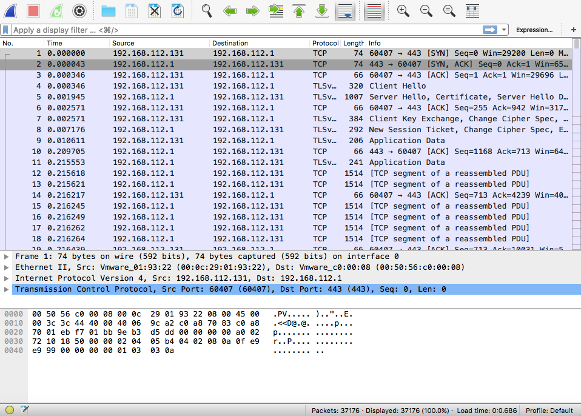
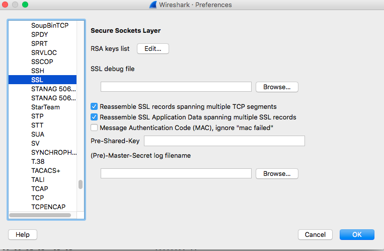
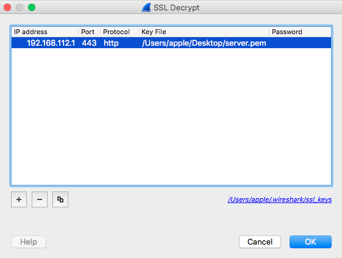
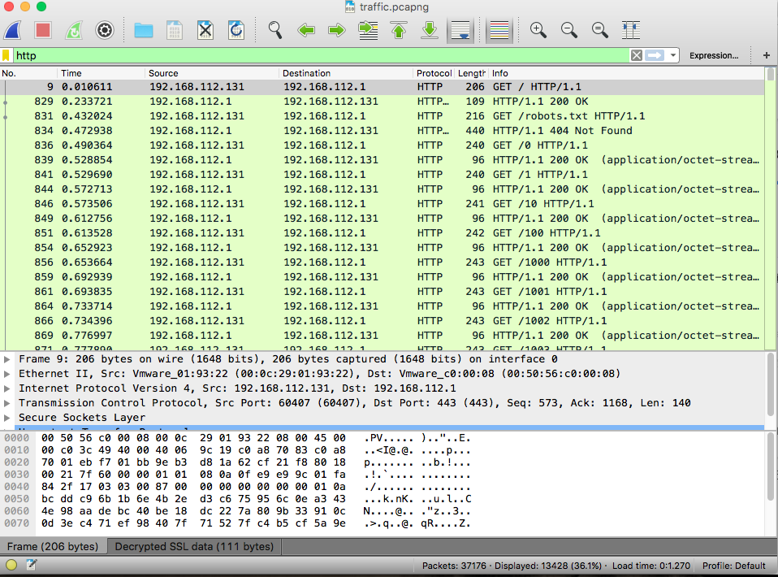
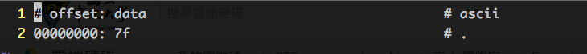

Wireshark 是一個 open source 的封包分析軟體 (前身為 Ethereal)，在 Linux, Windows, MacOS 都可使用，支援幾乎所有軟體擷取的網路封包檔案 (e.g.: pcap, pcappng)
linux 中若非安裝 desktop 版本則可透過 tcpdump 來錄製目前網路封包，再將封包送至 wireshark 解析即可
可用 scp 傳送指令 linux 資料 (ssh base)1
2
3scp -P "portNumber" "localFileName" "account"@ip:/path/"NewFileName"
// 從本地送至遠端某個 ip: port
// localFileName 和 遠端連線 對調即可拿取遠端資料
網路中的封包最常見的為 http 及 https 封包，https 即為 加上了 SSL/TSL 加密後的協定，因此從 wireshark 上是無法直接看到內容的，除非有 SSL 加密中的 private key (e.g.: der or pem 格式檔案)才可以解開 https 封包，首先將封包檔案匯入 wireshark 之後看到下圖:

發現裡面有 TSL 字樣的封包，看起來應該是經過 SSL 加密的 https 封包，也可以透過上面的輸入列過濾只有 http 的封包，若是過濾結果為空則確定有封包經過加密
可以透過 .pem 檔案將該封包解密，透過 preferences -> Protocol -> SSL 中的 Edit 按鍵加入 key (.pem)

觀察被加密的封包的來源等等資料，這裡的意思是將 source/destination ip = 192.168.112.1 中的 https (443 port) 封包利用後面路徑的 key 解密成 http 封包

如此便能透過過濾 http 來得到解密後的封包

看來封包為 192.168.112.1 及 192.168.112.131 兩個 ip 之間的交流，透過 get 方法傳送資料，然後接收者回傳 200 ok，查看封包內容發現接收方封包內只包含了一個 byte 的資訊，頗為不合常理，因此再次過濾1
http && ip.src == 192.168.112.1
發現所有封包都只有一個 byte，推測應該可以組合成一個完整檔案，因此透過 File -> Export Objects -> HTTP 匯出所有 http 的封包 (要生成一個資料夾來裝匯出檔案，放在桌面會因為檔案數量太多顯示悲劇)，匯出後發現共有編號 0~6711 個各別為 1 byte 的檔案，可利用 hexedit 軟體觀看一下檔案內容，以 ubuntu 14.04 為例安裝1
2
3
4
5
6sudo apt-get update
sudo apt-get install nodejs npm nodejs-legacy
sudo npm install hexedit -g
sudo hexedit 0
// 透過 hexedit 觀察 0 檔案的 16 進位及 text 內容

發現前幾個檔案可以構成 .ELF 字樣，此為 linux elf 檔案的固定開頭形式，因此猜測可透過合併所有檔案來生成一個可執行檔
透過下列指令可以合併兩個檔案:1
2cat 0 1 > test
// 將 0 和 1 的內容合併輸出至新生成的 test 檔案
由於檔案數量太多，因此透過 python 撰寫自動生成腳本
merge.py
1 | import os |
組合生成單一檔案之後透過 hexedit 查看發現檔案開頭為 elf 的 magic number “7f 45 4c 46 02 01 …”，此為 elf 檔案的證據
或者也可以透過 file 指令觀察是否判定為 elf 檔案，加入執行權限之後執行之即可看到 flag